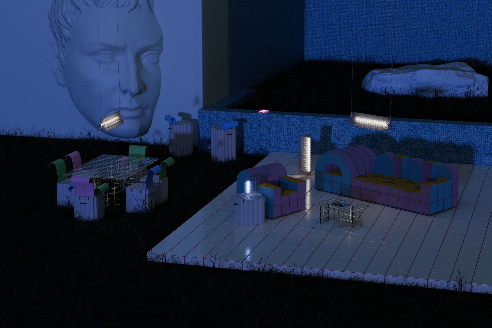
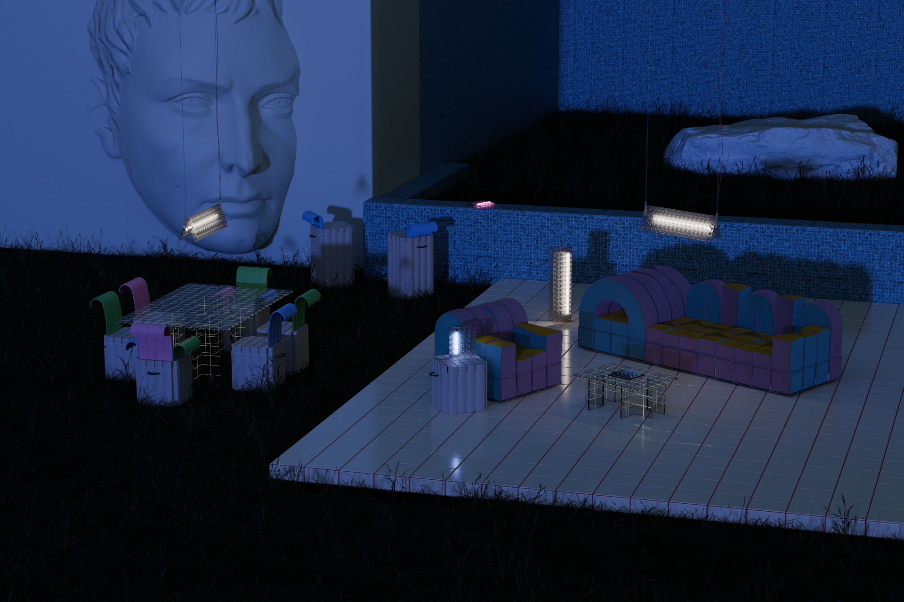

Gridscape
Gridscape è un sistema di arredo modulare ispirato all'estetica dei mondi isometrici e ai linguaggi del gioco, della plastica, del colore.
Le sedute, i tavoli e i corpi illuminanti sono pensati come pixel tridimensionali che possono essere assemblati liberamente per creare paesaggi domestici o urbani temporanei.
Il progetto esplora un equilibrio tra l'architettura infantile e la scultura funzionale. Tutti gli elementi sono costruiti come volumi geometrici puri, con materiali leggeri e tonalità pastello enfatizzate da superfici reticolari.
Gridscape invita l'utente a reinterpretare lo spazio abitativo come un ambiente interattivo e trasformabile, in cui il design non è un vincolo ma un gioco serio.